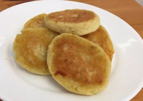

Batotinha

Ingredientes
- 2 xícaras (chá) de purê de batata (460 g)
- 1/2 xícara (chá) de farinha de arroz (90 g)
- 1 1/2 colher (chá) de sal (8 g)
- Recheio a gosto (queijo, fiambre, frango desfiado, carne moída, azeitona...)
Modo de preparo
- Misturar o purê de batata, a farinha de arroz e o sal (se precisar, acrescentar um pouco mais de farinha para dar o ponto).
- Dividir a massa em bolinhas, rechear uma a uma e modelar em formato de disco (bolinhas achatadas).
- Dispor em uma assadeira untada e levar para assar em forno pré-aquecido a 180° C por 15 minutos. Virar as batotinhas e assar por mais 15 minutos.